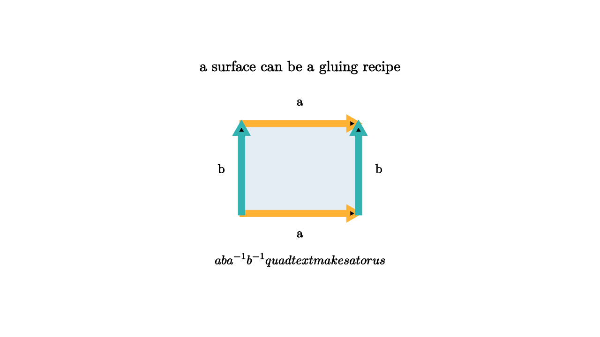

Surfaces Are Built From Gluing Rules
One of the most useful ways to understand a surface is to cut it open. A cylinder becomes a rectangle when sliced along one vertical seam. A torus can be cut into a square whose opposite edges are marked for gluing. A more complicated surface becomes a polygon with paired edges, arrows, and labels. The surface is the result of obeying those instructions.
This is a powerful reversal. Instead of starting with a smooth object floating in space, we start with a flat page and a rule. Glue edge a to the matching edge a, respecting arrows. Glue edge b to its partner. The local points along the boundary merge, and the global surface appears.

source
let Edge = |a, b, col| stroke{col, 5} Arrow(a, b)
mesh scene = [
center{1.35u} Text("a surface can be a gluing recipe", 0.7),
fill{alpha{0.12} BLUE} stroke{LIGHT_GRAY, 2} Rect([1.55, 1.2]),
Edge([-0.78, -0.6, 0], [0.78, -0.6, 0], ORANGE),
Edge([-0.78, 0.6, 0], [0.78, 0.6, 0], ORANGE),
Edge([-0.78, -0.6, 0], [-0.78, 0.6, 0], TEAL),
Edge([0.78, -0.6, 0], [0.78, 0.6, 0], TEAL),
center{[0, -0.88, 0]} Text("a", 0.62),
center{[0, 0.88, 0]} Text("a", 0.62),
center{[-1.05, 0, 0]} Text("b", 0.62),
center{[1.05, 0, 0]} Text("b", 0.62),
center{1.22d} Tex("aba^{-1}b^{-1} \\quad \\text{makes a torus}", 0.6)
]The arrow directions are crucial. If opposite sides of a square are glued in matching directions, the result is a torus. A creature walking off the right edge reappears on the left edge at the corresponding height. A creature walking off the top reappears at the bottom. This is the flat torus used in many video games and simulations with wraparound worlds.
If one pair of arrows is reversed, the rule creates a twist. A rectangle with one pair of opposite edges glued in opposite directions gives a Mobius band when the other pair remains open. Pair both directions with suitable reversals and projective planes or Klein bottles enter the story. The picture remains flat, but the instruction changes the topology.
source
let SquareRecipe = |twist| [
fill{alpha{0.12} BLUE} stroke{LIGHT_GRAY, 2} Rect([1.6, 1.16]),
stroke{ORANGE, 5} Arrow([-0.8, -0.58, 0], [0.8, -0.58, 0]),
stroke{ORANGE, 5} Arrow([0.8 * (2 * twist - 1), 0.58, 0], [-0.8 * (2 * twist - 1), 0.58, 0]),
stroke{TEAL, 5} Arrow([-0.8, -0.58, 0], [-0.8, 0.58, 0]),
stroke{TEAL, 5} Arrow([0.8, -0.58, 0], [0.8, 0.58, 0])
]
let HandleSymbol = [
stroke{ORANGE, 5} Circle(0.58),
stroke{TEAL, 5} Circle(0.28),
center{0r} Tex("\\chi = V - E + F", 0.60)
]
"Polygon"
mesh title = center{1.34u} Text("edge words become surfaces", 0.68)
mesh model = SquareRecipe(0)
mesh caption = center{1.2d} Text("matching arrows produce a handle direction", 0.62)
play Fade(0.7)
play Write(0.7)
"Twist"
model = SquareRecipe(1)
play Lerp(1.1)
caption = center{1.2d} Text("reversing an arrow inserts a twist", 0.62)
play Trans(0.6)
"Invariant"
model = HandleSymbol
play Trans(1.0)
caption = center{1.2d} Text("the gluing rule leaves algebraic fingerprints", 0.62)
play Trans(0.6)The edge word is a compact algebraic code for the gluing. The torus has the word aba^{-1}b^{-1}. The order says how the boundary of the polygon is read, and the inverse marks the opposite orientation. A sphere can be represented by gluing two disks along a common boundary, or by simpler triangulations. A genus two surface, shaped like a double handle, has a word such as
Each commutator block contributes a handle.
Euler characteristic gives the first numerical invariant of the recipe:
Here F counts faces, E counts edges after identifications, and V counts vertices after identifications. A torus from one square has one face, two distinct edge classes, and one vertex class, so $\chi = 1 - 2 + 1 = 0$. A sphere has $\chi = 2. A genus g orientable surface has $\chi = 2 - 2g.
The classification theorem for compact surfaces says these recipes can be simplified into standard forms. Closed orientable surfaces are spheres with g handles. Closed nonorientable surfaces are connected sums of projective planes. That statement is grand, but its working method is concrete: cut, label, slide labels, and simplify the edge word while preserving the surface.
This style of thinking has applications beyond classroom topology. Mesh processing uses gluing instructions constantly. A triangle mesh is a list of faces plus rules for which edges are shared. Computer graphics engines use this data to shade surfaces, detect boundaries, and compute normals. Physics simulations impose periodic boundary conditions by identifying opposite edges of a computational box. Algebraic topology reads invariants from the same kind of combinatorial data.
The lesson is that surfaces are not mysterious because they curve in 3D. Their topology is already present in how local patches are sewn together. A gluing rule tells you which neighborhoods become neighbors, which loops survive, and which algebraic invariants the surface will carry.